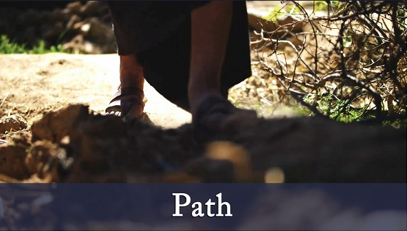
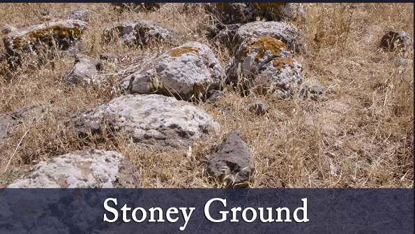
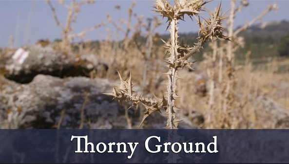
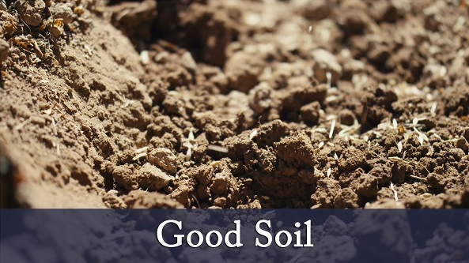

A farmer went out to sow his seed, As he was scattering the seed, some fell along the path, and the birds came and ate it up.

Some fell on rocky places, where it did not have much soil. It sprang up quickly, because the soil was shallow. But when the sun came up, the plants were scorched, and they withered because they had no root.

Other seed fell among thorns, which grew up and choked the plants.

Still other seed fell on good soil, where it produced a crop-a hundred, sixty or thirty times what was sown.
Matthew 13:10-14 NIV
The disciples came to him and asked, “Why do you speak to the people in parables?” He replied, “Because the knowledge of the of the kingdom of heaven has been given to you, but not to them. Whoever has will be given more, and they will have an abundance. Whoever does not have, even what they have will be taken from them. This is why I speak to them in parables: “Though seeing, they do not see; though hearing, they do not hear or understand. In them is fulfilled the prophecy of Isaiah: “ 'You will be ever hearing but never understanding; you will be ever seeing but never perceiving.